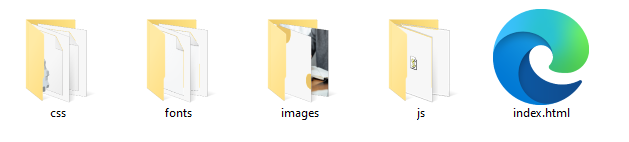

Criando um site gratuito no Github
O que é o GitHub?
O GitHub é uma plataforma de hospedagem de código-fonte na nuvem, projetada para facilitar a colaboração entre desenvolvedores de software. Ele é um repositório - um ambiente centralizado para armazenar, gerenciar e compartilhar projetos de desenvolvimento de software, incluindo controle de versão.
Glossário
Mas antes, uma explicação sobre dois termos muito usados no GitHub:
Repositório: Em termos simples, é um local onde os arquivos do seu projeto são armazenados e gerenciados. Ele pode ser comparado a uma pasta que contém todos os arquivos, pastas e histórico de alterações do seu projeto.
Commit: Um commit, ou "confirmação" em português, é uma ação que você realiza para registrar as alterações feitas em um repositório Git. Quando você faz um commit, você está essencialmente salvando a versão atual dos arquivos em seu projeto. Isso ajuda a criar um histórico das alterações do projeto.
Tutorial passo a passo
Como criar uma conta no GitHub, habilitar o GitHub Pages e colocar os arquivos HTML de seu site no repositório para criar seu primeiro site:
Passo 1: Criar uma conta no GitHub
1. Acesse o site do GitHub em https://github.com/
2. Clique em "Sign up" (Registrar-se) no canto superior direito.
3. Preencha o formulário de registro com seu nome de usuário desejado, endereço de e-mail e senha. (dê preferência para letras em minúsculas e sem acento)
4. Selecione um plano (escolha o plano gratuito - FREE).
5. Complete o processo de verificação (se necessário) e concorde com os termos de serviço.
6. Clique em "Create account" (Criar conta).
Passo 2: Criar um novo repositório
- Após criar a conta e fazer login, clique no botão "New" (Novo) no canto superior esquerdo da página inicial do GitHub.

2. Insira um nome para o repositório. Por exemplo, você pode chamá-lo de "site" (em minústulas e sem as aspas).
3. Adicione uma breve descrição opcional.
4. Escolha o repositório público (o GitHub Pages funciona apenas com repositórios públicos).
5. Marque a opção "Initialize this repository with a README" (Inicializar este repositório com um README).

6. Clique em "Create repository" (Criar repositório).
Passo 3: Habilitar o GitHub Pages
1. No seu novo repositório, clique na guia "Settings" (Configurações) no menu superior.
2. Role para baixo até a seção "Pages", no menu da esquerda.

3. Na página que se abre, no tópico "Branch" (Ramificação), está marcado "None" (Nenhum). Selecione "main" ou "master" como a branch que você deseja usar para o GitHub Pages e clique em "Save" (Salvar), do lado.

No alto desta mesma página aparecerá o endereço web do seu site. geralmente na forma de:
https://seu-nome-de-usuário.github.io/seu-repositório/
Guarde este endereço para visualizar o site mais tarde, depois de subir seus arquivos.
Passo 4: Adicionar arquivos HTML ao repositório
1. No seu computador, crie uma pasta para o seu projeto do site e coloque os arquivos HTML e outros recursos do site nessa pasta.
2. Volte à página do seu repositório no GitHub - clique no menu <code> (no menu superior, e não no botão verde).

3. Clique no botão "Add file" (Adicionar arquivo) e escolha a opção "Upload files" (Enviar arquivos).

4. Arraste e solte os arquivos HTML e outros recursos do site na caixa de seleção ou clique em "choose your files" (escolher seus arquivos) para selecionar manualmente os arquivos.

5. Aguarde o upload dos arquivos. Você pode subir até 100 arquivos por vez.
6. Depois, desça até o final da página e clique no botão "Commit Changes" (Confirmar Alterações)

7. Pronto! Os arquivos foram salvos em seu repositório e logo estarão acessíveis pelo endereço web.
Detalhe: Seja paciente. Toda alteração no GitHub
leva em torno de 3 a 5 minutos para ficar disponível.
Agora você criou com sucesso uma conta no GitHub, habilitou o GitHub Pages e colocou seus arquivos HTML no repositório, permitindo que você tenha seu primeiro site online.
Comece com um template
Um template HTML é um modelo pré-definido de um site que contém a estrutura básica de uma página web (HTML, CSS, Javascript e imagens).
Ele geralmente inclui elementos comuns, como cabeçalho, menu, rodapé e áreas de conteúdo, que podem ser personalizados de acordo com as necessidades específicas do projeto. Um template HTML é uma ótima maneira de começar a praticar o HTML, pois oferece uma base sólida para construir rapidamente páginas web consistentes e bem organizadas.
Você pode usar um template pronto que uso em minhas aulas para começar a aprender, o Ebook Landing. Faça o download através deste link:
>> template_ebook_landing.zip
Ao fazer o download, mude o arquivo para a pasta "Vídeos", evite deixar na pasta "Área de Trabalho", "Downloads" ou "Documentos", já que a proteção da Rede da Facha vai evitar de abrir o arquivo .Zip corretamente.

Extraia os arquivos e pronto! Você terá os seus arquivos base para trabalhar e enviar para o seu Repositório no GitHub (conforme a imagem).